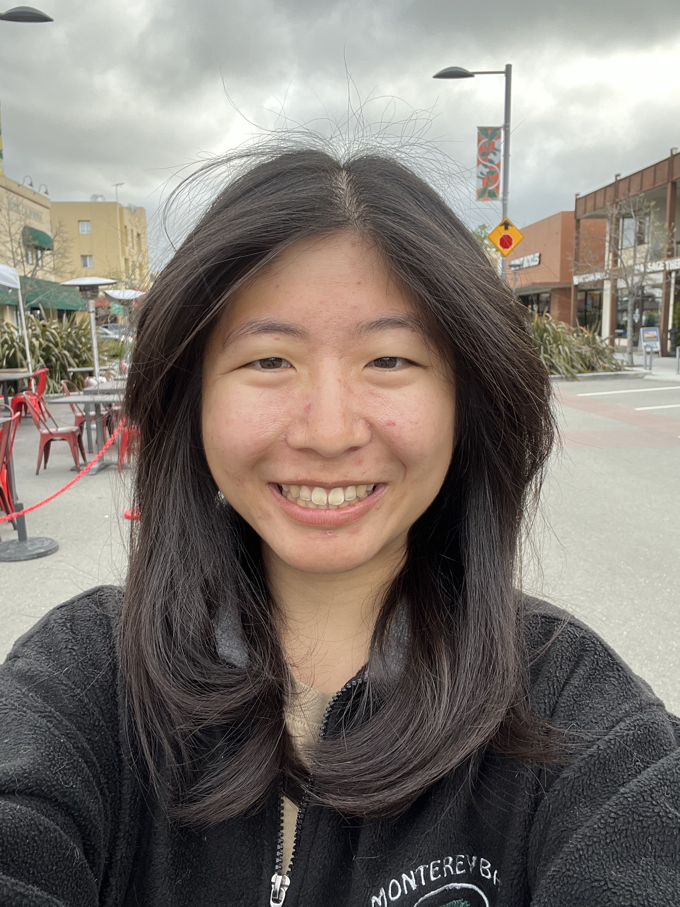

Gina Yuan

Email
|
GitHub
|
CV
I'm a final-year Computer Science PhD candidate at Stanford.
My research is in computer networks, including transport protocols and the
application of set reconciliation techniques to in-network proxies.
I previously studied Computer Science at MIT (B.S.'19, M.Eng.'19).
Publications
Peer-Reviewed
-
Internet Connection Splitting: What's Old is New Again
[paper]
[source]
Gina Yuan, Thea Rossman, Keith Winstein.
USENIX ATC 2025 (to appear).
-
Sidekick: In-Network Assistance for Secure End-to-End Transport Protocols
[paper]
[source]
[slides]
[podcast]
Gina Yuan, Matthew Sotoudeh, David K. Zhang, Michael Welzl, David Mazières, Keith Winstein.
NSDI 2024. Outstanding Paper Award! Community Award!
-
Cornflakes: Zero-Copy Serialization for Microsecond-Scale Networking
[paper]
[source]
Deepti Raghavan, Shreya Ravi, Gina Yuan, Pratiksha Thaker, Sanjari Srivastava, Micah Murray, Pedro Henrique Penna, Amy Ousterhout, Philip Levis, Matei Zaharia, Irene Zhang.
SOSP 2023. Distinguished Artifact Award!
-
Sidecar: In-Network Performance Enhancements in the Age of Paranoid Transport Protocols
[paper]
[source]
[slides]
[video]
Gina Yuan, David K. Zhang, Matthew Sotoudeh, Michael Welzl, Keith Winstein.
HotNets 2022.
-
Offload Annotations: Bringing Heterogeneous Computing to Existing Libraries and Workloads
[paper]
[source]
[slides]
[video]
Gina Yuan, Shoumik Palkar, Deepak Narayanan, Matei Zaharia.
USENIX ATC 2020.
-
Aurum: A Data Discovery System
[paper]
[source]
Raul Castro Fernandez, Ziawasch Abedjan, Famien Koko, Gina Yuan, Samuel Madden, Michael Stonebraker.
ICDE 2018.
Other
-
Extricating IoT Devices from Vendor Infrastructure with Karl
[paper]
Gina Yuan, David Mazières, Matei Zaharia.
arXiv 2022.
-
Scalable Fault Tolerance for High-Performance Streaming Dataflow
[abstract]
Gina Yuan.
ACM Student Research Competition at SOSP 2019.
-
Scalable Fault Tolerance for High-Performance Streaming Dataflow
[thesis]
Gina Yuan.
M.Eng. Thesis, Massachusetts Institute of Technology, September 2019.
Personal
- I started racing bikes with Alto Velo Racing Team and Stanford Cycling during COVID-19. A personal achievement I am proud of is podiuming the criterium, time trial (TT), and team time trial (TTT) at the 2023 collegiate national championships. I also had the opportunity of racing in a 5-day stage race against the country's best domestic pro teams at the Redlands Bicycle Classic in 2023.
- I competed with MIT Sport Taekwondo in my undergrad, and led the team to a national title in 2019 as team captain. I personally got 2nd in black belt flyweight sparring, and was the collegiate national champion in red belt poomsae in 2018.
- I ran Battlecode in 2018 and 2017. It was featured in Hacker News, Vice, and The Tech. We also hosted an IAmA that reached the front page of Reddit.